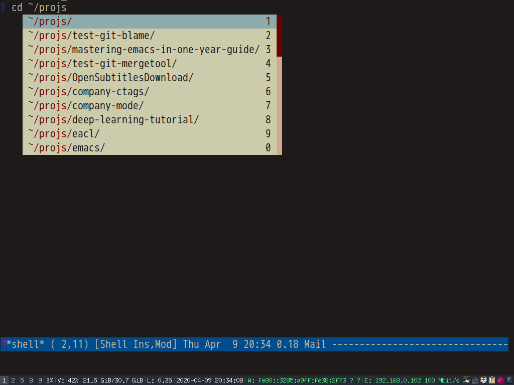
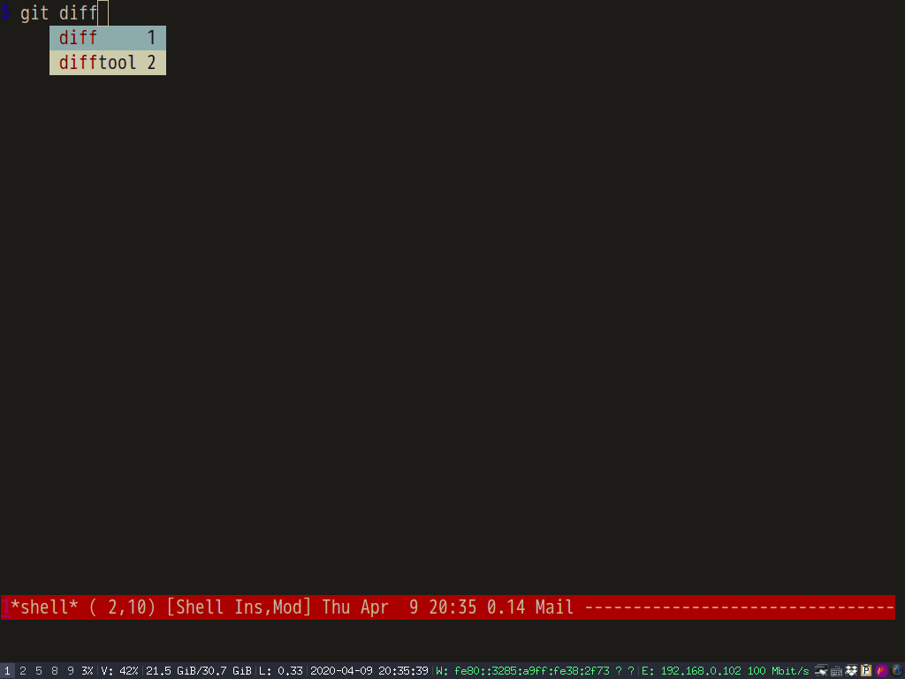

Thoughts on "Native shell completion in Emacs"
Native shell completion in Emacs by Troy Hinckley is must read for completion in shell-mode.
One problem is my ~/.bashrc executes /etc/bash_completion,
if [ -f /etc/bash_completion ]; then
. /etc/bash_completion
fi
Unfortunately /etc/bash_completion makes complete -p output some lines the Emacs function bash-completion-tokenize can't analyze.
Here is output of complete -p at my PC,
... complete -F _known_hosts mtr complete -o default -o nospace -W 'homepc 192.168.1.104 github.com gitlab.com' scp complete -o default -f -X '!*.dvi' dvipdf ...
The line gitlab.com' scp will crash bash-completion-tokenize. Obviously, one line
complete -o default -o nospace -W 'homepc 192.168.1.104 github.com gitlab.com' scp is wrongly split into multiple lines by complete -p.
In shell-mode, completion functions might call bash-completion-tokenize. If bash-completion-tokenize crashes, the completion in shell-mode won't work.
Besides, if company-mode provides auto-completion UI, it's better to place the backend company-files before company-native-complete. It's because the backend company-files displays the full file path in candidates. So users can complete the whole path in one shot.
My setup code for the packages Troy Hinckley suggested,
;; Enable auto-completion in `shell'.
(with-eval-after-load 'shell
(native-complete-setup-bash))
;; `bash-completion-tokenize' can handle garbage output of "complete -p"
(defadvice bash-completion-tokenize (around bash-completion-tokenize-hack activate)
(let* ((args (ad-get-args 0))
(beg (nth 0 args))
(end (nth 1 args)))
;; original code extracts tokens from output of "complete -p" line by line
(cond
((not (string-match-p "^complete " (buffer-substring beg end)))
;; filter out some wierd lines
(setq ad-return-value nil))
(t
ad-do-it))))
(defun shell-mode-hook-setup ()
"Set up `shell-mode'."
;; hook `completion-at-point', optional
(add-hook 'completion-at-point-functions #'native-complete-at-point nil t)
(setq-local company-backends '((company-files company-native-complete)))
;; `company-native-complete' is better than `completion-at-point'
(local-set-key (kbd "TAB") 'company-complete))
(add-hook 'shell-mode-hook 'shell-mode-hook-setup)
Screenshot,

